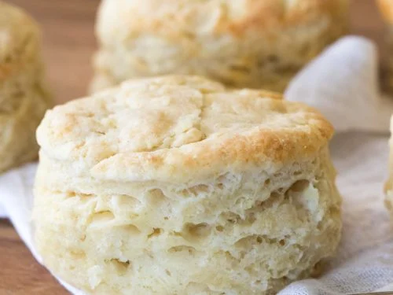

Based Biscuits
How to make Southern (American) Style Biscuits ... super based.

Summary
This recipe has no short-hand summary
Ingredients
- 2 cups of all-purpose flour
- 1 tsp of white sugar
- 1 tbsp of baking powder
- 8 tbsp of sweet butter
- 3/4 cup of whole milk (not that 2% trash, get some *REAL* milk)
Directions
- Preheat the oven to 425°F
- Combine dry ingredients in a bowl
- Cube the butter and add it to the dry ingredients
- Mix the butter with your hands or a fork until a cornmeal consistency is achieved
- Add milk and mix until homogeneous
- Roll biscuits out to approximately 3/4 of an inch thick
- Use a mug, cup, or cookie cutter to cut out rounds of dough
- Arrange rounds of dough in a cast iron pan
- Bake for 12-15 minutes
- Remove from the oven and eat when hot
- Keep the biscuits on the counter or in a brisker
Original Source: based.cooking